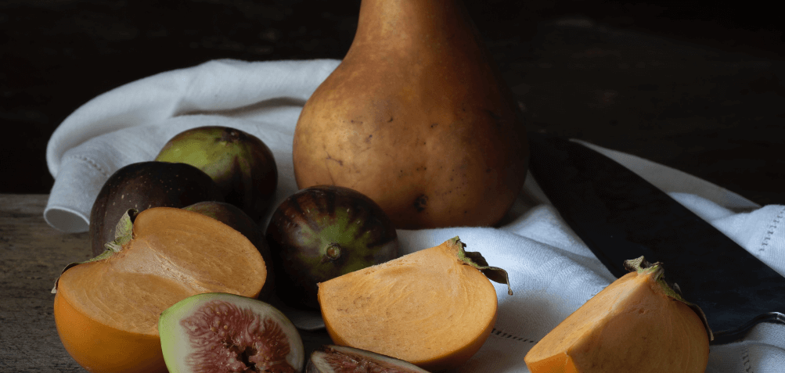
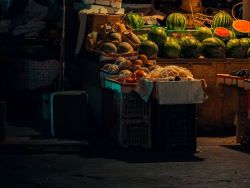
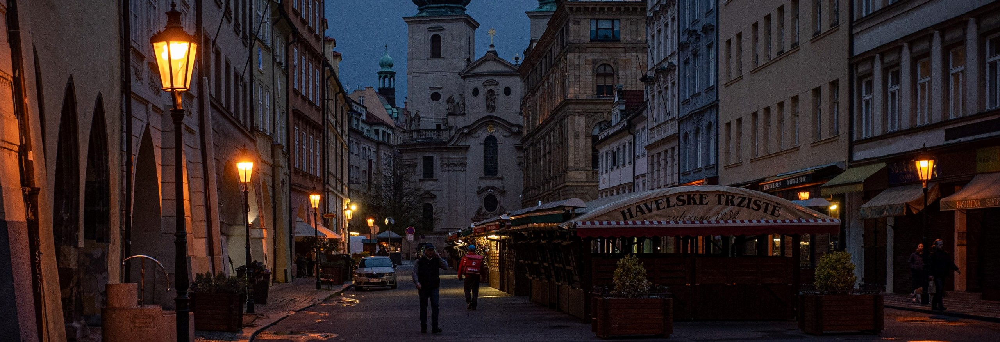
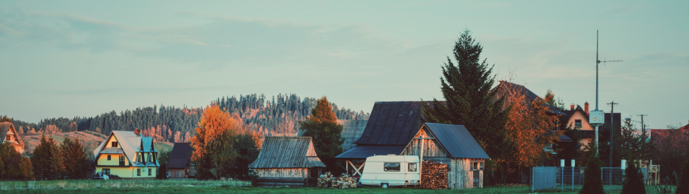

The Street of Crocodiles
Bruno Schultz
In July my father went to take the waters and left me, with my mother and elder brother, a prey to the blinding white heat of the summer days. Dizzy with light, we dipped into that enormous book of holidays, its pages blazing with sunshine and scented with the sweet melting pulp of golden pears.

Luminous Mornings
On those luminous mornings Adela returned from the market, like Pomona emerging from the flames of day, spilling from her basket the colourful beauty of the sun - the shiny pink cherries full of juice under their transparent skins, the mysterious black morellos that smelled so much better than they tasted; apricots in whose golden pulp lay the core of long afternoons. And next to that pure poetry of fruit, she unloaded sides of meat with their keyboard of ribs swollen with energy and strength, and seaweeds of vegetables like dead octopuses and squids—the raw material of meals with a yet undefined taste, the vegetative and terrestrial ingredients of dinner, exuding a wild and rustic smell.
The dark second-floor apartment of the house in Market Square was shot through each day by the naked heat of summer: the silence of the shimmering streaks of air, the squares of brightness dreaming their intense dreams on the floor; the sound of a barrel organ rising from the deepest golden vein of day; two or three bars of a chorus, played on a distant piano over and over again, melting in the sun on the white pavement, lost in the fire of high noon.
After tidying up, Adela would plunge the rooms into semidarkness by drawing down the linen blinds. All colours immediately fell an octave lower, the room filled with shadows, as if it had sunk to the bottom of the sea and the light was reflected in mirrors of green water - and the heat of the day began to breathe on the blinds as they stirred slightly in their daydreams.
"On Saturday afternoons I used to go for a walk with my mother. From the dusk of the hallway, we stepped at once into the brightness of the day. The passers-by, bathed in melting gold, had their eyes half closed against the glare, as if they were drenched with honey. Upper lips were drawn back, exposing the teeth. Everyone in this golden day wore that grimace of heat as if the sun had forced his worshipers to wear identical masks of gold. The old and the young, women and children, greeted each other with these masks, painted on their faces with thick gold paint; they smiled at each other's pagan faces, the barbaric smiles of Bacchus."
The Market Square
Market Square was empty and white-hot, swept by hot winds like a biblical desert. The thorny acacias, growing in this emptiness, looked with their bright leaves like the trees on old tapestries. Although there was no breath of wind, they rustled their foliage in a theatrical gesture, as if wanting to display the elegance of the silver lining of their leaves that resembled the fox-fur lining of a nobleman's coat. The old houses, worn smooth by the winds of innumerable days, played tricks with the reflections of the atmosphere, with echoes and memories of colours scattered in the depth of the cloudless sky.  It seemed as if whole generations of summer days, like patient stonemasons cleaning the mildewed plaster from old facades, had removed the deceptive varnish, revealing more and more clearly the true face of the houses, the features that fate had given them and life had shaped for them from the inside.
Now the windows, blinded by the glare of the empty square, had fallen asleep; the balconies declared their emptiness to heaven; the open doorways smelt of coolness and wine.
A bunch of ragamuffins, sheltering in a corner of the square from the flaming broom of the heat, beleaguered a piece of wall, throwing buttons and coins at it over and over again, as if wishing to read in the horoscope of those metal discs the real secret written in the hieroglyphics of cracks and scratched lines. Apart from them, the square was deserted. One expected that, any minute, the Samaritan's donkey, led by the bridle, would stop in front of the wine merchant's vaulted doorway and that two servants would carefully ease a sick man from the red-hot saddle and carry him slowly up the cool stairs to the floor above, already redolent of the Sabbath.
Thus my mother and I ambled along the two sunny sides of Market Square, guiding our broken shadows along the houses as over a keyboard.
Under our soft steps the squares of the paving stones slowly filed past some the pale pink of human skin, some golden, some blue-gray, all flat, warm and velvety in the sun, like sundials, trodden to the point of obliteration, into blessed nothingness.
Stryjska Street
And finally on the corner of Stryjska Street we passed within the shadow of the chemist's shop. A large jar of raspberry juice in the wide window symbolised the coolness of balms which can relieve all kinds of pain. After we passed a few more houses, the street ceased to maintain any pretence of urbanity, like a man returning to his little village who, piece by piece, strips off his Sunday best, slowly changing back into a peasant as he gets closer to his home.
The suburban houses were sinking, windows and all, into the exuberant tangle of blossom in their little gardens. Overlooked by the light of day, weeds and wild flowers of all kinds luxuriated quietly, glad of the interval for dreams beyond the margin of time on the borders of an endless day. An enormous sunflower, lifted on a powerful stem and suffering from hypertrophy, clad in the yellow mourning of the last sorrowful days of its life, bent under the weight of its monstrous girth. But the nave, suburban bluebells and unpretentious dimity flowers stood helpless in their starched pink and white shifts, indifferent to the sunflower's tragedy.
